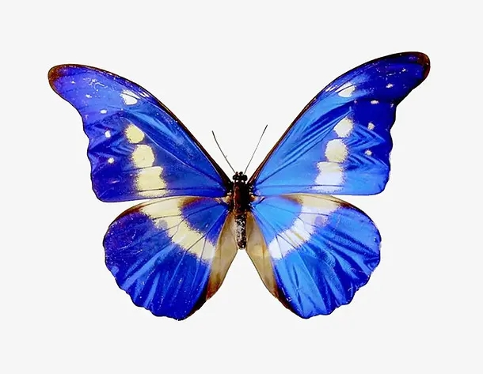
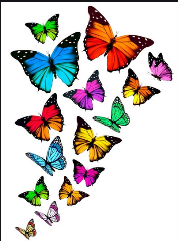
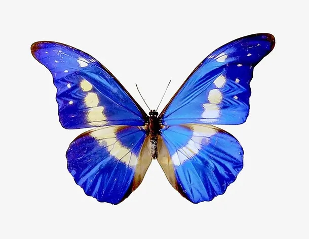
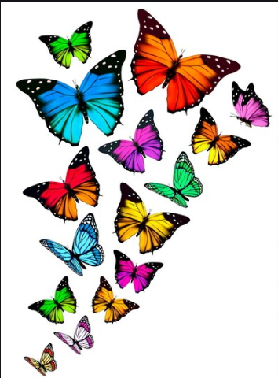

什么是蝴蝶
蝴蝶是一类美丽的昆虫，通常具有翅膀和鲜艳的颜色。它们是生态系统中重要的花粉传播者，也是自然界中令人着迷的生物之一。
蝴蝶的生命周期经历了幼虫、蛹和成虫三个阶段，每个阶段都有着独特的特征和生活方式。它们的飞舞和翅膀上的花纹吸引着无数人的注意。
在全球，有超过 20,000 种蝴蝶，它们分布在各种不同的环境中，从热带雨林到寒冷的山区。
蝴蝶不仅仅是漂亮的昆虫，它们在生态系统中扮演着重要的角色，促进植物的繁殖和生态平衡。
蝴蝶是一类美丽的昆虫，通常具有翅膀和鲜艳的颜色。它们是生态系统中重要的花粉传播者，也是自然界中令人着迷的生物之一。
蝴蝶的生命周期经历了幼虫、蛹和成虫三个阶段，每个阶段都有着独特的特征和生活方式。它们的飞舞和翅膀上的花纹吸引着无数人的注意。
在全球，有超过 20,000 种蝴蝶，它们分布在各种不同的环境中，从热带雨林到寒冷的山区。
蝴蝶不仅仅是漂亮的昆虫，它们在生态系统中扮演着重要的角色，促进植物的繁殖和生态平衡。